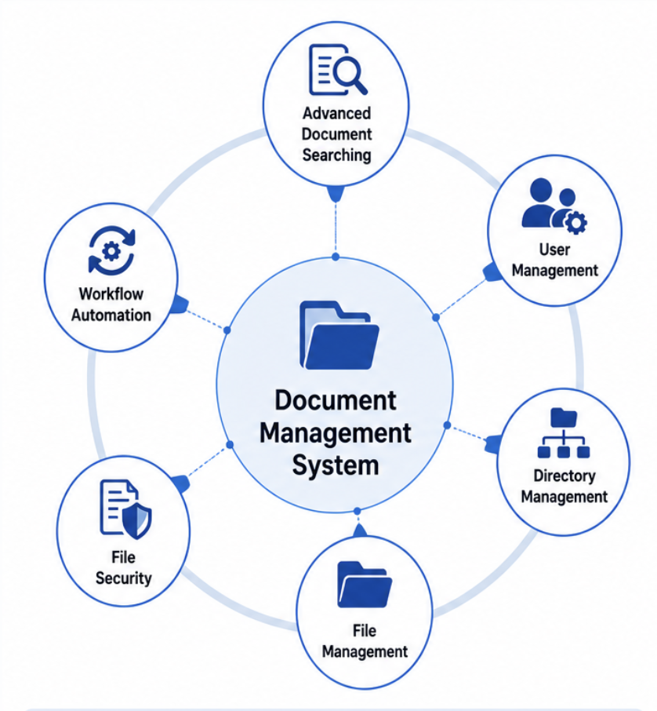

drop DMS.png into /imagges
Enterprise Document Management
Built and maintained features for a platform used to store, retrieve, and track enterprise documents at scale. Delivered frontend modules using React.js and TypeScript, and contributed to backend services in Go.
Implemented observability with OpenTelemetry for metrics, logs, and distributed traces, integrated with Prometheus, Loki, Tempo, and Grafana to strengthen production visibility and troubleshooting.